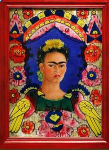

The Life and Art of a Mexican Artist

“Yo soy mi propia musa. Soy el sujeto que mejor conozco.”
“I am my own muse. I am the subject I know best.”
“Pies, ¿para qué los quiero si tengo alas para volar?”
“Feet, what do I need you for when I have wings to fly?”
“Bebí para ahogar mis penas, pero las condenadas aprendieron a nadar.”
“I drank to drown my sorrows, but the damned things learned how to swim.”
“Al final del día, podemos soportar mucho más de lo que creemos.”
“At the end of the day, we can endure much more than we think we can.”
- 1907– Frida Kahlo is born in Coyoacán, Mexico City, Mexico.
- 1913 – Contracts polio at age 6, leaving her with a lifelong limp.
- 1922 – Enrolls at the National Preparatory School in Mexico City, one of the few female students.
- 1930 – Moves to the U.S. with Rivera, living in San Francisco, Detroit, and New York. Suffers multiple miscarriages, influencing her art.
- 1933 – Returns to Mexico. Moves into the Casa Azul (Blue House) in Coyoacán, which later becomes her museum .
- 1940 – Reconciles and remarries Diego Rivera.
- 1943 – Becomes a teacher at La Esmeralda, inspiring a new generation of Mexican artists.
- 1950 – Hospitalized for nearly a year due to complications from past injuries.
- 1953 – First solo exhibition in Mexico; attends in a hospital bed.
- 1954 – Passes away at age 47 in Casa Azul, officially from a pulmonary embolism, though some speculate a possible overdose.